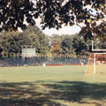

|  |
Leonidoff Field
Built in 1865
Office of the current College President |
Leonidoff Field is Marist's first major athletic field, providing a venue for sports and intermural activities hosted by the Marist Athletics Department. It is also home to Tenney Stadium, which offers seating for over 5,000 spectators.
The field was dedicated to Dr. Aleski A. Leonidoff in 1968. Leonidoff was born and raised in Russia, and developed a relationship with Marist through Jack Gartland. During his tenure as a physician at St. Francis Hospital, he donated money to the College for the construction of the field. In addition, he donated funds to support a scholarship for students specializing in science and pre-medical studies.
Since its beginnings in 1965, multiple improvements have been made to the field. An irrigation system consisting of 11 zones and 36 sprinkler heads was installed to keep the then-Kentucky bluegrass, fescue, and rye natural turf looking its best. In 2001 Musco field lighting was installed to allow night games to occur, opening up a new range of possibilities for the field.
Marist Football has since been the program that has seen the most activity on the field, but other teams use it regularly, such as soccer, lacrosse, and intermural sports.